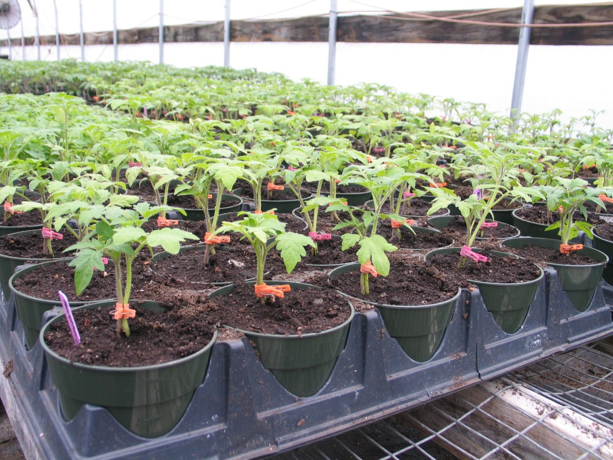

Nursery Preparation

Tomato seeds are almost usually started indoors (whether in a greenhouse or a sunny window ledge) and then transplanted to beds once they have at least a few leaves and an established root system. Starting seeds indoors is optional with many vegetables, but tomato seeds need a constant soil temperature of at least 60 degrees, and preferably 80 degrees, to germinate.
Tomatoes originate deep in the tropics; temperatures below 32 degrees Fahrenheit will kill it.
You can also use a small piece of land (or your backyard) for your nursery. This can be done around March/April when the rain is just starting in most parts of the country; check with any farming calendar to find the best time for every year.
‘Soilless’ potting mix (available at any garden center, A standard homemade soilless mix contains equal amounts of peat moss, perlite (and/or vermiculite), and sand. Bark can be used in absence of sand, while coconut coir can replace peat moss) is the medium of choice for sowing tomato seeds, though you can opt for the more expensive ‘seeding mix’ if you want. As for the container, cell packs (the tiny plastic pots grouped together in packs often used for flower and veggie seedlings) are OK for starting tomato seeds, but a better idea is to use a small pot at least 3 or 4 inches tall and wide so the seedlings can grow to a healthy size without their roots being constricted.
The three most important steps are:
1) Fill the pots with potting mix to within a 1/2-inch of the top and place a pair of seeds on top of the soil in each one near the center of the pot (having two is good insurance in case one doesn’t sprout. Pinch off the smaller, weaker of the two if they both sprout).
2) Cover them with a ¼-inch layer of soil mix and the compress the soil with your fingers. Good seed-to-soil contact is important for germination.
3) Sprinkle water on the seeds whenever the top of the soil mix appears dry. Don’t keep the soil soggy, so that the seeds won’t rot.
The seeds will need a sunny window with at least 4 hours of direct sun each day, but preferably more. Also: the warmer it is, the faster tomato seeds will germinate. Maintaining room temperature above 60ºF will get the job done, but there are also seedling heat mats, heat lamps and many other tricks that farmers and gardeners have concocted to speed up the process. A simple approach is to cover the pots tightly with plastic and take advantage of the greenhouse effect to warm up the soil when the sun is out and hold on to the heat at night.
There is an important thing to know about tomato seedlings and mini-greenhouses: If you’re covering your seeds to keep them warm, you must remove the cover as soon as they start to germinate. Otherwise, they may succumb to damping off disease, a fungal infection that proliferates in still, moist air. This appears as brown and grey spots on the leaves followed soon after by the death of the seedling). Damping off is a big challenge with tomato seedlings in general, so try to provide good air circulation during their infancy period indoors. A tiny fan or heat vent nearby is helpful, as is an open window from time to time (but only when outdoor temps get up to room temp).
It takes about 5-7 days for the seeds to start germinating.
Fertiliser/Humate/Manure Selection
One of the greatest mistakes of tomato farmers in Nigeria is to blindly rely on NPK and urea alone. There are several types of fertilisers. You should apply fertilisers according to the result of your soil test. Types of fertilisers used for tomato farming include Mono Ammonium Phosphate, Potassium Nitrate, Calcium Nitrate, Chelates, Potassium Sulfate and foliar fertiliser etc.
Humates can be used to repair the soil and to make fertilisers more effective. Humates like humic acid and fluvic acid are important natural fertilisers that can do wonder to your tomato plants.
Fluvic Acid can be used to decontaminate your soil. It has been shown that high doses of fluvic acid can resolve nematode problem in your soil.
Manure should be used to improve your soil. Well aged chicken manure are very potent to increase the cation exchange capacity and nutrients of the soil.
Some innoculants containing beneficial microbes are also very good to improve the soil. They are capable of competing and killing the bad microbes in the soil. Some beneficial microbes can attach to the roots of the plants, increase the root mass by 100 times. Large roots will extract more water and nutrients from the soil; this will lead to increase in yield.
Some of the beneficial microbes are sold in Nigeria; they can also break up the soil, aerate the soil and allow more oxygen to get to the roots of the plants.
If you are using drip irrigation, the fertilisers, bio-fertilisers and humates can be passed to the crops through the drip irrigation system.
Pesticides Selection
Should i use pure organic pesticides or inorganic pesticides? Both have their own advantages and disadvantages.
You need pesticides to kill harmful pests and prevent or cure diseases. If you decide to be organic, you may use neem oil, black soap, fermented cow urine and ghost pepper mixed with water to spray your tomato plants, this can help to prevent diseases, it can also kill harmful pests.
Bio-pesticides containing antagonistic microbes can be used to kill harmful insects and prevent fungal and other diseases. These microbes take over the surfaces of leaves and stem, in this process they prevent the ability of harmful microbes to live on the plants. Some of the microbes in the bio-pesticides can also poison and kill harmful insects and pests.
You should ensure that those who will spray the crops with pesticides must do so effectively and efficiently, the pesticides solution must tough all the parts of the tomato plants. You may use Knapsack sprayer or motorised sprayer.